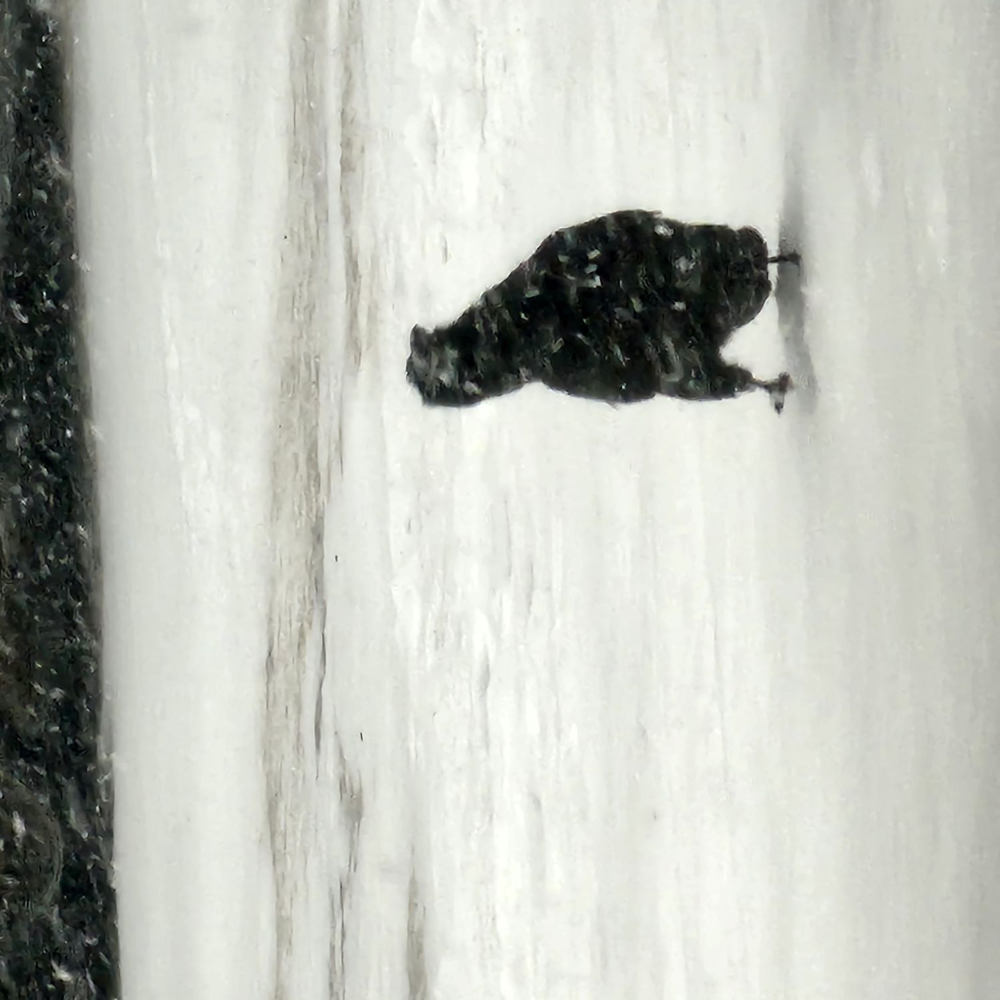
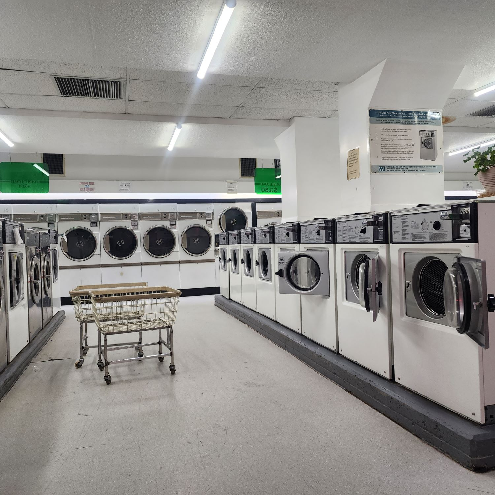
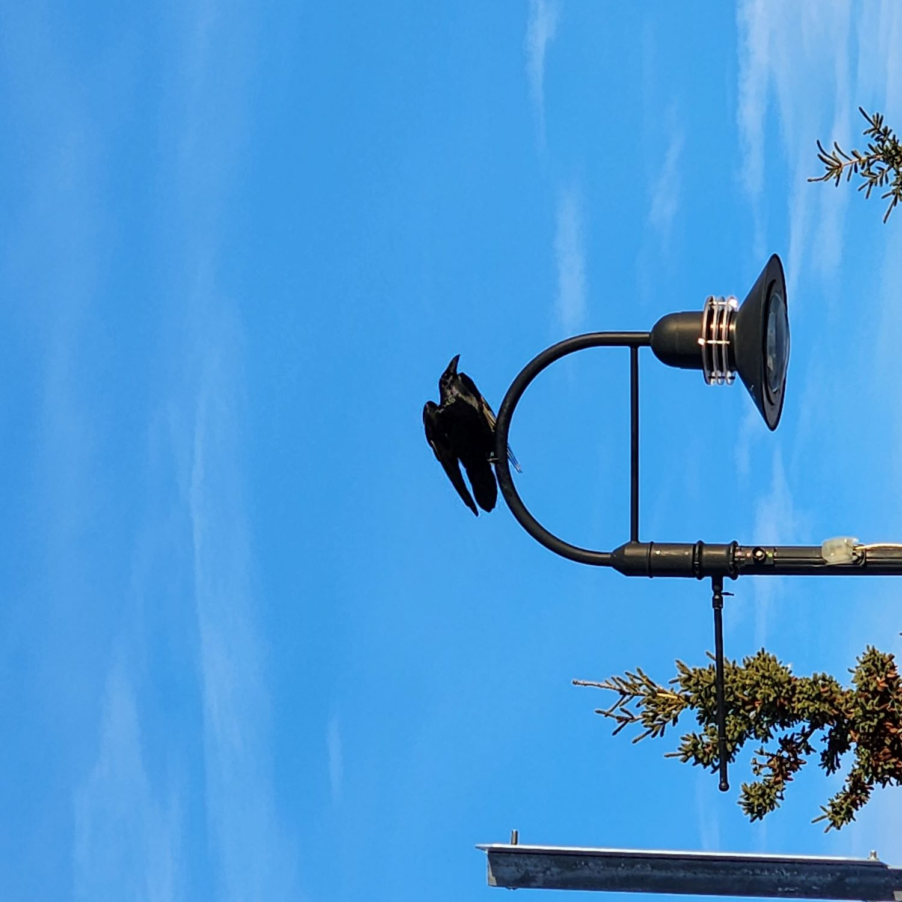

⭐️
🌸
🐙
🔥
🥑
Born and raised in Whitehorse, Yukon by a single mother and two older twin brothers, Marya Gaiten is currently a student at Yukon University. Over the years she’s come to love writing, along with the many forms one can show their skills and passions through websites, videos, and social media. She’s worked on several websites for herself and a few organizations - namely Atlin Arts, Music Festival, and the condo corp website. Apart from her love of the arts, Marya also enjoys spending time with her family and friends doing a variety of activities. She one day hopes to be able to publish her novel, along with running a blog to share her experiences with mental illness and the mental health system. She hopes that being able to share her story and the tools that have helped will inspire others to do the same.
© 2020-2024. Hand crafted with ❤ + Flexbox + CSS Grid by James Neufeld.